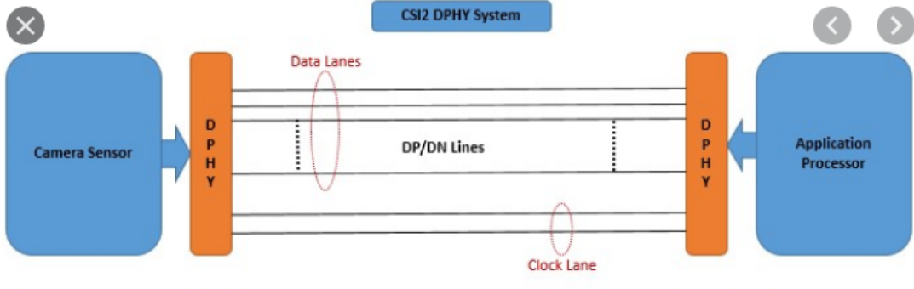

如何驱动MIPI DSI -1
MIPI DSI协议简介
MIPI（Mobile Industry Processor Interface）是一个提供高速、低功耗的串行通讯协议。其定义了摄像头、显示器以及芯片到芯片的通讯连接（分别需要支持C-PHY、D-PHY或者M-PHY），现在广泛用于各种视频传输的方案中，比如手机显示屏啊、摄像头之类的，这里主要来说一下DSI的部分。
DSI（Display Serial Interface)，即用于显示的协议。其物理层的电路非常简单，如下图所示。主要就是clock以及lanes数据线均采用差分连接）。clock用于信号同步，lanes就是用于传输数据。

根据使用场合对带宽的不同需求，可以自定义配置使用的lanes的数量。其速度可以参考下图

比如4通道的DSI接口最高可以达到的带宽为10Gbps，平均每个lane速度为2.5Gbps。为了理解这个速度可以对比一下PCIE协议的带宽。PCIE3.0作为现在CPU连接GPU的主流总线，其总线的带宽已经是很能打的存在了，一个PCIE lane的带宽为8Gbps，也比MIPI的带宽高不了太多，所以MIPI速度可以说相当快了），扯远了扯远了。看完上面可能会觉得，好像用MIPI协议驱动显示屏幕没有想象的那么难，还是很简单的，比如试试FPGA呢？
FPGA驱动MIPI？有点难度
比如说HDMI这种接口直接用FPGA来写还是比较简单的，网上都能找到代码，比如这里。那是不是MIPI也可以这么操作？
找一个别人写好的MIPI的FPGA驱动代码，选一个合适的lanes数量，比如就4个lanes吧。然后连接4lanes需要的十根线（8个数据线、2个时钟线），然后在电路上连接HDMI接口，搞定。简直简单的不讲武德。真的这么简单吗？并不是🙄
原因在于MIPI协议并不是HDMI这种面向用户的接口。目前，面向用户的接口有HDMI、VGA、DVI，这些接口传输的数据仅仅有像素点的数据，即从上到下依次扫描每个像素点，发送RGB的数据。所以这些接口自然就是通用的，随便插到什么显示器上都能直接用，只要显示器有这个插口。但是我们的显示器里面除了显示面板，还有一个显示驱动板，将通用的HDMI、VGA等接口转化为给显示面板用的数据，那么这种面向屏幕的接口有哪些？直接面向屏幕的接口包括：
- 通用接口eDP、LVDS、RGB等
- 专用的屏幕接口，比如MIPI DSI，MIPI DPI等
之所以要有一个专门的面向屏幕的接口是因为由于不同的显示面板的参数不同，需要根据驱动面板自身的参数调整类似于刷新时间、空白时间等。拿MIPI为例，为了配置这些参数信息，就需要用接口中的Lanes按照MIPI规定的传输帧格式来传输数据 （需要按照特定的握手顺序以及指令规则传输控制和视频数据），而比较蛋疼的是，MIPI的接口协议并不公开，大厂内部应该都有，但是作为第三方的DIY玩家来说，这些东西就是很难拿到的（或许可以通过看示波器信号来逆向解析协议，这个太硬核了，本渣流下了太菜的泪水😭）。
因此想要直接用FPGA来驱动的话难度很大，代码并不像HDMI代码这么简单🤔。那有没有什么桥梁，能够间接驱动显示屏幕呢？还真有
基于ASIC芯片的方案
既然MIPI闭源了没法写FPGA程序，能否用已经成熟的ASCI来帮我们完成这部分功能？还真有，比如东芝的TC358x系列、TI的DSI8x系列、还有稚辉君提到的龙讯的LT6911方案等都是。这些方案相当于提供了一个API接口，提供了可以连接闭源的MIP的一个开源接口的桥梁。以TC358870为例，左侧为HDMI的输入（这部分直接接到显示源上就可以了，不需要进行专门的程序编写），右侧是2x4lanes的MIPI输出以及屏幕的配置I2C接口部分以及音频部分。

通过I2C的接口配置传入屏幕的参数配置信息。所以如果这个芯片要适配不同的屏幕，就需要通过MCU给这个芯片发送对应的屏幕信息。这个方案就看起来可行得多😂。
参考文献
- RPi 树莓派 DSI 接口研究 MIPI raspberry pi
- TC3587x datasheet
- TC358870XBG Datasheet-Toshiba-datasheet-33023052.pdf)
- 东芝MIPI芯片
- TI MIPI芯片
- 稚辉君HDMI PI项目